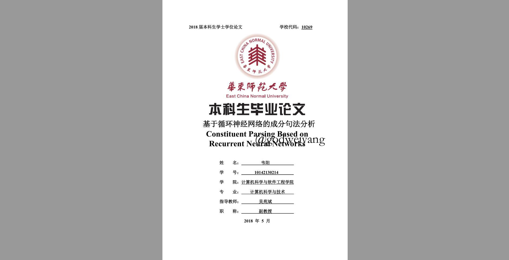
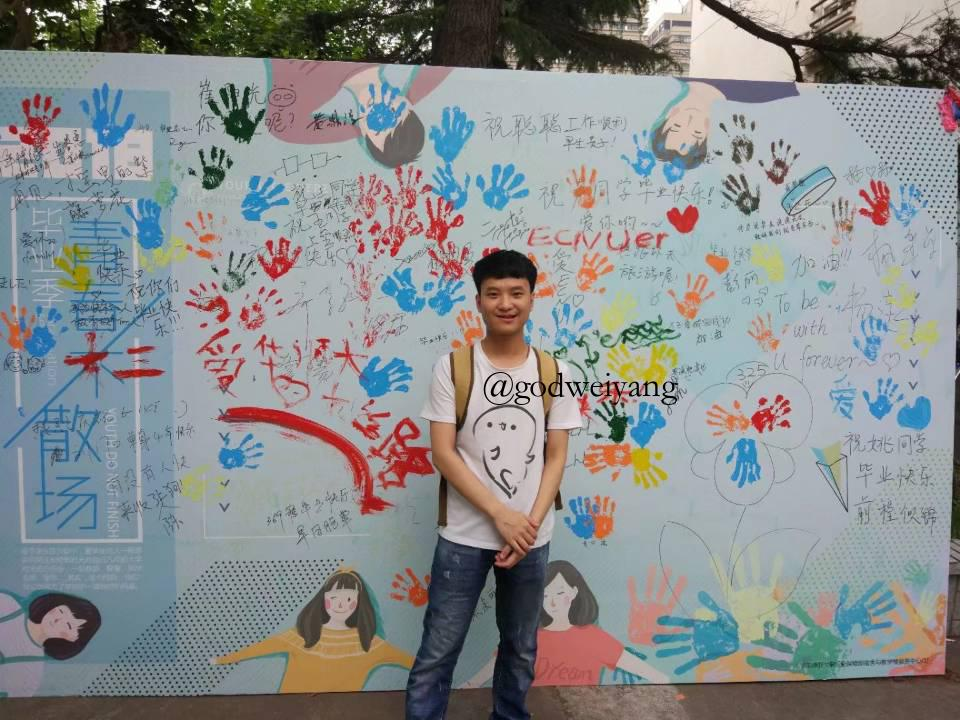
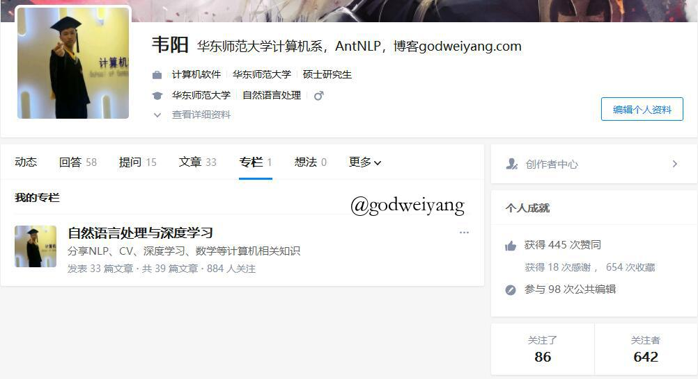

某天，你无端想起了一个人，她曾让你对明天有所期许，但是却完全没有出现在你的明天里。
2017年好像还历历在目，2018年却要过去了，貌似这一年并没有发生什么特别值得纪念的事情吧，平平淡淡，淡的就像一杯白开水。
细数这一年发生的事，前半年写毕业论文，送走了一个又一个熟悉的面孔，略有感伤；后半年荒废，偶尔看看论文偶尔写两行代码，仍然时常因为一些无关紧要的事情而感伤。
- 毕业
- 炼丹
- 想开
毕业季
整个上半年差不多都在忙着读论文、改代码、写毕设吧。虽然当时的眼光有限，看的论文还都是几年前的传统方法，例如CKY算法，模型也基本都是基于Grammar的，在现在看来效率实在是低下，效果也不尽人意。幸好论文写得马马虎虎，也算是萌混过关吧QAQ，最后也混了个并没有什么卵用的优秀毕业论文。
毕业论文封面：

忙完了毕业论文，接下来就是毕业典礼了吧，也是个忧伤的时期吧。还记得毕业典礼那天大家一起去了闵行，自从两年前搬来中北后，就再也没有回去过了吧。闵行的校园，闭着眼睛也能知道走到哪了吧，毕竟曾经都一起走过，到处都留下了回忆。那天天气非常的好，又把校园都走了一遍吧，只是没有去曾经的三舍看看，略有遗憾，当年去四舍帮忙搬家的情景又浮现在了眼前。也许是回忆过多，没有久留，一伙曾经玩的最好的朋友们一起在宝龙广场吃了饭唱了歌，就当做是散伙饭了吧。
之后就是暑假了吧，有人升学到了其他学校，有人开始了工作生涯，也有人继续和我一样留在了本校，继续做了室友。特别值得一提的是永日至秦吧，那个打游戏打的我心态爆炸的选手。暑假每天一起半夜出来跑了最后的步，还一起骑着单车骑到了外滩，再上一次去那看夜景还是不知几年前和她去的了吧，换了个人去，别有一番滋味。现在永日至秦也一个人去了北京，不知何时再能见到，希望下次见到李院士的时候你不是一个人（此处貌似有歧义）。
最后附上孙子临走前的美照一张，有意向勾搭的找我要联系方式：

炼丹生涯开始
送走了所有人之后，暑假搬了宿舍，就正式开始了研究僧的炼丹生涯（划水混毕业）了吧。一整个暑假都在看论文，补基础，也差不多看完了成分句法分析近几年来的所有深度学习方法了吧，基本对此有了一个初步的认识。还开通了知乎专栏：自然语言处理与深度学习，经营到现在也才900不到的粉丝吧，希望有一天能像大佬们那样几万的粉丝，在这个领域做出自己的贡献吧。通过看论文，写博客，也认识了许多志同道合的人吧，还和大佬们有所交流。

其实写博客也是很累的，从刚开始计划的paper daily到后来的paper weekly，再到现在的paper randomly。有时候一篇论文真的要精读好久才能读懂，有时候实在读不懂了，就直接开写，在写的过程中，逐渐的就把自己说服懂了。其实这也和讲presentation一样，我也是比较喜欢做presentation的，一个原因是我确实喜欢和别人分享各种好的paper，好的思想，另一个原因是在讲的过程中，有些我一直不懂的问题可能讲着讲着我就懂了，也可以和台下的老师同学们自由讨论，理解得更加透彻。
可能会有人问我，你写了没人看，哪里有成就感？确实，刚开始时只有寥寥无几的老同学们来捧个场子，而且他们也都看不懂，只是点个赞。但是如果只是为了出名，那就不要写博客了吧，写博客是主要是为了提升自己，记录自己的点点滴滴，然后是和别人分享，同时自己也能获得进步。至于成就感的话，慢慢就有了，最起码每次写完一篇博客，看着整理的满满当当的博文，自己就会有一种成就感，不需要别人来证明。现在每天看着知乎多了新粉丝，偶尔会有新评论和私信，询问学术方面的问题，还是会有小小的欣慰的。
现在论文看的不如以前多了，看来还是得去补补基础，或者去看看其他方面的论文，涉猎广一点，有些东西是通用的，可以拿来为之所用。代码的话之前写的也不多，一直都是面向过程，写的代码都不堪入目。直到开学才拿了伯克利的优质代码，重构了一下，整合了比较流行的几种模型，在上面进行了修改，最近也一直在跑。虽然现在没有对象，但是面向对象的思想还是要有的，不然以后代码维护起来都很困难的。
开学了课虽然不多，但是事情还是挺繁杂的吧。周二要给大三的操作系统实践做助教，每周都要改作业，还是挺麻烦的，混学分不容易。周四一天满课，知识分析课每周都要抄作业度日，其他几门课也都没怎么听，现在担忧期末考试怎么办，本科认真学习的劲头不知道都去哪里了，可能现在只要不挂科就行了吧，心态变了。而且现在想找个能一起学习的朋友都很难了。
庸人自扰
并没有遇到什么在意的人吧，就说说我一直以来的心路历程吧。
一个人好过歹过也已经有一年半多了，在旁人看来这么久了，也早该忘得一干二净了，但是毕竟这是初恋吧，被义务教育压榨了这么多年后的第一次解脱，很难忘记。而且我也不是一个很随便的人，没那么容易忘。直到一个多月前吧，她终于遇到了对她真正好的人了，我想我也该彻底释怀了，知道消息时也没多大的情绪波动，一切都在意料之中，早晚会来临的。
可能会有人觉得我喜欢撩妹吧，学妹加了挺多。的确，是加了不少，都是每年开学水新生群加的吧，但绝大多数都安静地躺尸在了好友列表里。偶尔会有一些“慕名前来”问问题的人，以前我还能认真回答回答，毕竟我一直喜欢帮助别人，分享自己的经验。但是现在我改变了这些想法，二十三年了，第一次在这方面感到累了，也许自闭才是最好的解决方法吧，帮助别人到最后什么都得不到吧，还是照顾好自己。既然喜欢的人不可得，那就安心学习吧，对自己好才是最重要的。如果对任何人都这么有求必应，可能真的变成了小太阳了吧。
以前的我也跟小标题一样，时常庸人自扰，无病呻吟吧，可能是我想太多了吧，总是被一些无关痛痒的事影响，每天都是唉声叹气的。现在我想开了，真的没必要为这些琐事担忧烦心，放任它去吧。每当再遇到了困扰的事，出去散散心倒是最好的解决方式，虽然找不到最合适的人一起散心，但是能呼吸一下外面透心凉的空气，心里的结也能一下子解开了。见的多了自然而然就不会为一些事而感到郁郁寡欢了，从前每次遇到不顺心的事总会连着影响几天，饭也吃不好觉也睡不着，学习也没有任何的动力。现在想开了，努力练就一颗强大的内心吧，虽然铁石心肠不好，但是还是要坚强呀。你已经是个大人了，要学着自己控制情绪了，不要再做一个幼稚的小孩了，成熟点吧。
2019畅想
关于下一年，首先把课混过去，然后好好看论文敲代码做实验吧，但愿能有个不错的想法和实验效果，让我能在明年就安然毕业。至于发A什么的，就先想想吧，朝着这方面努力，希望我的微信名可以早日改掉。
情感方面，就准备单着三年吧，除非天上掉馅饼了，好好做学术才是正道。
多出去走走吧，本科四年都呆在学校了，三点一线式的类高中生活，谈的也是高中式恋爱吧，累了累了。
其他没啥好想的了，鄙人不善幻想，只喜欢晚上做梦，最后送上泰戈尔的一句名言吧，与君共勉：
有一个夜晚我烧毁了所有的记忆，从此我的梦就透明了；
有一个早晨我扔掉了所有的昨天，从此我的脚步就轻盈了。